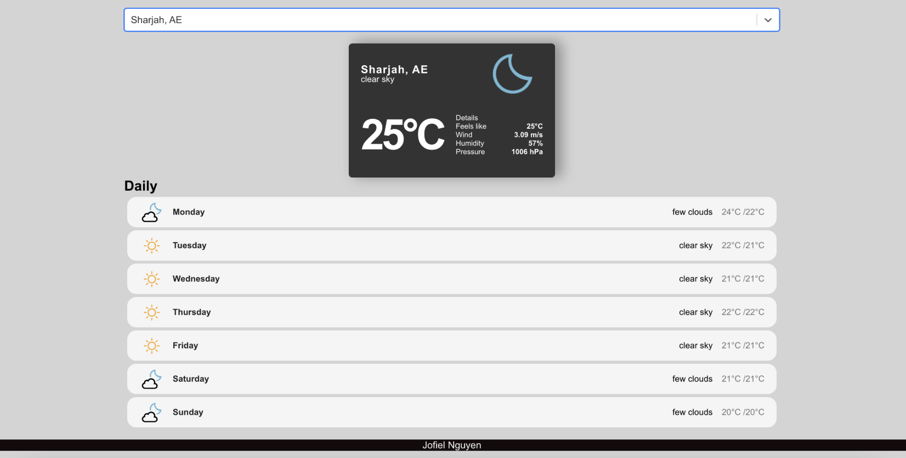

Weather App
The React-WeatherApp is a user-friendly web application that provides real-time weather data. Users can easily access detailed weather forecasts based on their location, thanks to its intuitive interface and location-based functionality. The app boasts a sleek design, customizable settings, and responsiveness across devices, ensuring users receive accurate and accessible weather updates.
View Project on GitHub

Project Name 2 (e.g., Simple Calculator)
Another project description. What problem did it solve? What skills did you use?
View Project on GitHub